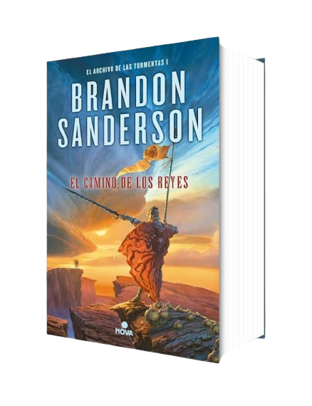

El Camino de los Reyes
Precio: $39000
SINOPSIS: En Roshar, un mundo de piedra y tormentas, extrañas tempestades de increíble potencia barren el rocoso territorio de tal manera que han dado forma a una nueva civilización escondida. Han pasado siglos desde la caída de las diez órdenes consagradas conocidas como los Caballeros Radiantes, pero sus espadas y armaduras aún permanecen.
En las Llanuras Quebradas se libra una guerra sin sentido. Kaladin ha sido sometido
a la esclavitud, mientras diez ejércitos luchan por separado contra un solo enemigo.
El comandante de uno de los otros ejércitos, el señor Dalinar Kholin, se siente
fascinado por un antiguo texto llamado "El Camino de los Reyes". Mientras tanto, al
otro lado del océano, su eminente y hereje sobrina, Jasnah Kholin, forma a su discípula,
la joven Shallan, quien investigará los secretos de los Caballeros Radiantes y la
verdadera causa de la guerra.
Resultado de más de una década de planificación y construcción de universos, El Camino
de los Reyes es el primer tomo de El Archivo de las Tormentas, una saga que constará de
diez volúmenes.